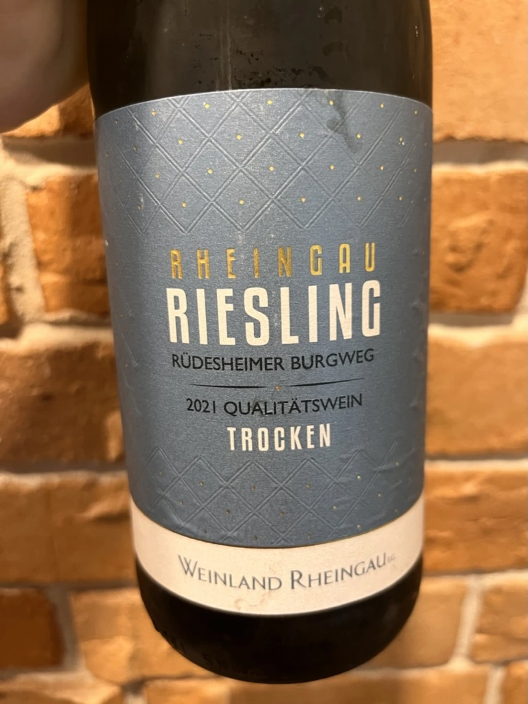

- Type
- White Still, Dry
- Producer
- Weinland Rheingau
- Vintage
- 2021
- Location
- Germany, Rheingau
- Grapes
- Riesling
- Alcohol
- 12.5
- Sugar
- NA
- Price
- 310 UAH
- Cellar
- N/A
Ratings
2022-06-26 - 7.30
Pale straw colour. Nose is dominated by green apple and nectarine with hints of pineapple. High, even crispy acidity, so chill it for good. Otherwise it’s light and easy going.